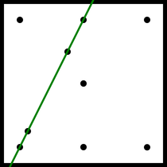

Soutěž v programování – 26. ročník
Krajské kolo 2011/2012
Úlohy můžete řešit v libovolném pořadí a samozřejmě je nemusíte vyřešit všechny. Za každou úlohu můžete dostat maximálně 10 bodů, z nichž je většinou 9 bodů vyhrazeno na ohodnocení funkčnosti programu, jeho shody se zadáním a efektivity a jeden bod na dokumentaci a přehlednost zdrojového kódu. Body získané za každou úlohu se ještě násobí koeficientem, který odráží složitost úlohy.
Na řešení úloh máte 4 hodiny čistého času.
Před zahájením soutěže vám pořadatel oznámí, kde najdete testovací soubory a vzorová řešení úloh. Textové testovací soubory pro všechny operační systémy používají řádky ukončené dvojicí znaků CR a LF.
Říká se, že při čtení textu dokážeme bez problému přečíst i slova s přeházenými znaky, pokud zůstane první a poslední písmenko na svém místě. Vaším úkolem je napsat program, který to pomůže ověřit. Na vstupu programu je text a celé číslo P v rozsahu od 0 do 1000 určující míru prohazování (viz dále). Výstupem je text s proházenými písmenky.
Přesný postup prohazování písmen je takovýto: Změny budeme provádět pouze ve slovech, slovem se rozumí posloupnost písmen české abecedy oddělená alespoň jedním nepísmenem (jakýmkoliv jiným znakem, mezerou, číslicí a pod). Znaky mimo slova nebudeme nijak měnit. Slova kratší než 4 písmena ponecháme také beze změn. Pro slova o čtyřech a více znacích určíme nejdříve počet prováděných prohozů pro dané slovo – má-li slovo N písmen, pak počet prohozů X bude náhodné číslo v rozsahu od 0 do P*(N-3)/100. Následně X-krát vybereme vždy náhodně dvě pozice písmen ve slově mimo první a poslední a písmena na nich umístěná prohodíme. Prohazujeme bez ohledu na to, zda již dříve na daném místě k prohozu došlo.
Pro zjednodušení chápejte písmeno „ch“ jako dvě samostatná písmena „c“ a „h“.
Má-li váš program grafické rozhraní, bude vstupní text vložen uživatelem do vstupního pole dle zvyklostí daného rozhraní. Programátoři pracující v prostředích preferujících příkazový řádek mohou pracovat se standardím vstupem a výstupem. Předpokládejte délky textů maximáně do osmi tisíc znaků.
Příklad 2. Příklad výstupu pro parametr P = 200
Dleůitžá věc je, aby blya pnvrí a psoelndí pímesna na srpváénm mstíě.
V sherwoodském lese už to zase vře – skupina zlosynů se snaží polapit Robina Hooda! Robin je na ně ovšem připraven a chce je přivítat bravurní střelou ze svého nového luku, který dokáže prostřelit i několik nepřátel naráz.
Problém je v tom, že zlosynů je opravdu hodně a Robin neví, jakým způsobem by jich mohl jedním výstřelem zasáhnout co nejvíc. Přemýšlel o tom, že by poprosil zlosyny, aby chvilku postáli bez pohnutí, dokud si nevyměří, odkud bude střílet, ale nebyl si jistý, že by jeho slušné žádosti zlosyni vyhověli. Poprosil nakonec raději o pomoc vás.
Napište program, který pokud možno rychle vyřeší Robinův problém. Na vstupu dostane souřadnice až 3000 různých bodů, každý zadaný dvěma souřadnicemi v rozsahu 1 až 1000. Cílem je najít přímku, která protne co nejvíc bodů. Přímka protne bod jenom tehdy, když prochází bez zaokrouhlování přesně jeho souřadnicemi. Máte zaručeno, že taková přímka je jedinečná. Výslednou přímku zobrazte spolu se všemi ostatními zlosyny v grafické podobě a vypište, kolik zlosynů dokáže Robin jedním výstřelem skolit.
Vstup načtěte ze souboru zlosyni.txt v aktuálním adresáři.
Soubor zlosyni.txt obsahuje souřadnice nepřátel,
na každé řádce jsou mezerou oddělená dvě přirozená čísla v rozsahu 1 až
1000. Nepřátel je nanejvýš 3000 a každý má jedinečné souřadnice. Řádky
jsou ukončeny dvojicí znaků CR a LF.
Zobrazte oblast (1, 1) až
(1000, 1000) se všemi zlosyny a s výslednou přímkou
tak, aby bod (1, 1) byl vlevo dole.
Také zobrazte nebo vypište, kolik zlosynů dokáže Robin jedním výstřelem skolit.
zlosyni.txt |
obrazovka |
100 900 400 700 900 100 500 500 100 100 500 900 150 200 900 900 500 100 |
Robin může jedním výstřelem skolit 4 zlosyny. 
|
Vypracujte program, který k zadanému celému kladnému číslu nalezne a vypíše co největší prvočíslo v jehož zápisu se každá číslice vyskytuje nanejvýš jednou a je menší než zadané číslo.
Například k 98777 to je prvočíslo 98731. Prvočíslo 98737 nevyhovuje protože se v něm vyskytuje číslice 7 dvakrát.
Děda K. se rozhodl, že napíše encyklopedii. Taková encyklopedie se skládá z hesel, což je dvojice: název předmětu – popis předmětu. Vaším úkolem bude dědovi práci zjednodušit.
Napište program, pro práci s encyklopedickými hesly. Hesel nebude celkem více než 10 tisíc. Název předmětu nebude mít více než 255 znaků. Žádná dvě hesla nesmí mít stejný název. Popis nebude mít více než 32000 znaků.
Program umožní tyto funkce:
načítání hesel z datového souboru, určeného uživatelem,
zobrazování hesel – hesla jsou přitom zobrazována abecedně seřazená podle názvu předmětu, malá a velká písmena jsou rovnocená,
vytvoření hesla,
vyhledání hesla podle názvu předmětu,
změna hesla,
vymazání hesla,
vyhledání textu v názvech nebo popisech, případně obojím,
ukládání hesel do datového souboru, původního nebo do určeného uživatelem,
export hesel do souboru HTML a vytvoření/zvýraznění odkazů na jiná hesla v popisech.
Funkce přidávejte postupně, jak jsou uvedeny v zadání. Funkce nebude hodnocena, pokud nebudou fungovat všechny funkce předcházející. Popis datového souboru a HTML souboru najdete dále.
Prohlédněte si také ukázkový program.
Datový soubor je textový soubor obsahující hesla, která jsou oddělena dvěma prázdnými řádky.
Heslo se skládá z jedné řádky obsahující název předmětu. Následuje jedna prázdná řádka a jedna nebo více řádek popisu předmětu.
Pozor: jednotlivé prázdné řádky v popisu předmětu jsou možné, zatímco dvě a více nikoliv, protože ty jsou použité jako oddělení hesel mezi sebou.
Viz ukázkové soubory v adresáři encyklopedie.
Tento soubor – stránka HTML zobrazuje hesla (názvy předmětu i
popis předmětu) seřazená podle názvů, malá a velká písmena jsou
rovnocená. Hesla, jejichž název začíná stejným písmenem jsou
seskupena do oddílů, na které jsou odkazy na začátku stránky. U
každého hesla jsou odkazy vedoucí na začátek oddílu a stránky.
Pokud se v popisu hesla objeví text, který se shoduje s názvem
kteréhokoliv hesla (bez ohledu na velikost písmen), změňte tento
text na odkaz na shodné heslo. Viz ukázkový soubor v adresáři
encyklopedie.